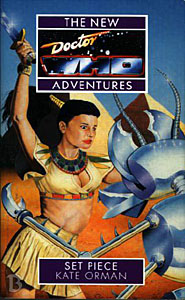

|
Set Piece
|
BASIC PLOT DOCTOR COMPANIONS MATERIALISATION CIRCUIT Pg 189 The TARDIS leaves M Theirry's house, to hide for a while. Pg 228 The TARDIS rematerializes at Kadiatu's house in Paris. PREPARATORY READING CONTINUITY REFERENCES Pg 3 Set Piece is, appropriately enough, divided into 'Pieces' as The Left-Handed Hummingbird was divided into 'Slices'. Pg 12 "My guess is that the Ants used to be people, and they put themselves into robot bodies." This is also a description of the Cybermen. Pg 13 "Do you know he got out of his capsule in cold storage? We couldn't believe it, he should have been frozen stiff. No matter where we put him, he gets out somehow. It's like he's magic." The Doctor has some resistance to cold, as proven in Iceberg, but it is limited. He would later go on to walk out of a different kind of cold storage in the Telemovie, but we weren't to know that at the time this book was published. Orman has a fascination with the idea of the Doctor being 'like magic', as particularly evinced in Vampire Science. Also, the Doctor's endless attempts at escape (and indeed a fair chunk of this book in many ways) are similar to the predicament in which the Doctor finds himself in Seeing I. A character called Groenwegen appears, named after Who fan Sarah Groenewegen. A similarly named character pops up in Return of the Living Dad and Vampire Science. Pg 14 "She used one of the Ants' machines to heal the fracture." At this moment, Ms Cohen is healing the fracture in the Doctor's arm. His ribs also get broken around this time, just as the Doctor is passing his one thousandth birthday, as SLEEPY makes clear: "The Doctor had spent his one-thousandth birthday in the belly of some alien ship, in a green room with veined walls, like the inside of a pitcher plant. He had been curled up around two broken ribs, trying to breathe. What he remembered was a young woman in a drab uniform coming into the room, turning off its surveillance equipment, and using a Feinberger to heal the ribs. She didn't say anything. He never saw her again. He remembered her face with intense clarity." (Pg 175 of SLEEPY) "and he caught the skin of her forehead between forefinger and thumb and he was so angry and a cold fizzing erupted through her face and ate into her brain and then" This skill appears to be similar to that which the Doctor used in Battlefield and Survival. Pg 15 "There was blood on it, and a small swarm of butterflies, intent on repairing the wrecked component." Butterflies are a big Orman thing, endlessly mentioned in this novel and also appearing most notably in the Butterfly room of Vampire Science and later EDAs. Mechanical insects also appear in the Bernice Summerfield novel The Big Hunt. Pg 22 The contents of the Doctor's pockets, far less than he usually carries on this occasion (presumably he was travelling light, in case he was captured), include: "a slingshot, some coins, a dog-eared paperback. Debris. The debris of a life that would never be completed. A jade brooch and a toffee wrapped in paper." The slingshot and coins are presumably from Silver Nemesis; no idea on the dog-eared paperback (surely not The Time Machine from the Telemovie?); the jade brooch is the one the Doctor picked up in The Aztecs, which he took to wearing again in White Darkness (pg 15); the toffee could come from anywhere, frankly. Pg 23 Reference to Daleks. Pg 25 "In this case, the only behaviour exhibited by the patient are the escapes." This, again, is very like the Doctor's obsessive compulsive actions in Seeing I. Pg 26 "'You promised,' he was saying, in a fragile whisper. 'Had a bargain... need... little bit longer. It's not that bad. Really... not that bad.'" The Doctor is talking to a figure that Ms Cohen can't see, but it probably either the Eternal incarnation of Death or Pain, the former of which appeared in Timewyrm: Revelation amongst others, and the latter of which is introduced in this novel. Pg 27 "He used some kind of nerve pinch on Groenewegen once. That's why we carry him around on the trolley. Once, he deactivated a force shield with a spoon." The nerve pinch may be a Star Trek reference, whilst the Doctor's connection to spoons can be seen in Time and the Rani (to our sorrow) and Conundrum, amongst, undoubtedly, numerous other places. Pg 31 The chapter title, 'Interesting Times' is both part of a Chinese curse ('May you live in interesting times') and the title of a Terry Pratchett novel, published a year before this novel. Pg 34 "The smile that normally flickered below Benny's surface was extinguished. She was thinking about her father." Benny thinks her father was lost in the Dalek wars (Love and War) but we eventually meet him in Return of the Living Dad. The cafe appears on Argolis, the location for The Leisure Hive. "'I've got a simple idea,' said the Doctor. 'We allow ourselves to be taken along for the ride.' 'Get ourselves arrested,' said Ace." This was Ace and the Doctor's modus operandi in The Happiness Patrol. "In Ace's memory, the Doctor had developed a livid scar under his left eye, a great purple blotch with a red line running crossways through it where someone had hit him. She felt a hot lump of badness in her stomach as he watched her drink, as though she were responsible for the damage." Ace most probably feels this because she so frequently has been responsible for the damage, most notably in The Left-Handed Hummingbird, where she stabbed the Doctor (albeit that she doesn't recall this) and No Future, where she pretended to. Set Piece is trying to ease these issues away. Pg 40 "She [Ace] had nothing. Nothing at all. Even the clothes she had been dressed in had been taken away, the woman servants intrigued by the curious, heavy fabric. She did not have her combat suit nor any of the things from her room in the TARDIS. She didn't even have so much as a tube of toothpaste." Ace is deliberately stripped away to the nothing, taking away all the accoutrements she has relied on for the last umpteen books and also resetting her to the position she must have found herself in after the timestorm that whipped her off to Svartos before Dragonfire. Pg 46 "Out of his belt he pulled a heavy copper sword, shaped like a sickle - a long straight piece with a wicked curve and a pointed tip. It looked like a question mark." The fact that Ace's weapon looks like a question-mark, a symbol so utterly associated with the Seventh Doctor, cannot be a coincidence. Pg 48 "'Where did I get up to last night?' 'You were being held prisoner by the traitor.' 'Oh, yes. That's right.' Ace pressed the heels of her palms into her eyes. London was an eternity away. Such a long time ago. 'Someone rang the doorbell. Mike went to see who it was,'" Ace, like Scheherazade, is telling her own adventures as stories, in this case, Remembrance of the Daleks. It's not dissimilar to that which Barbara intended to do in The Crusade (and indeed, she mentioned her most recent adventures during the course of that story). Pgs 48-49 "'I like these stories.' Sedjet held up his kill by the neck. 'Lots of action.' 'We like them with a bit of sex and violence!' hooted someone else." Sounds like a general description of the NAs. Pg 49 "Men I like have the bad habit of dying." Mike in Remembrance of the Daleks and, most notably, Jan Rydd in Love and War. Amongst numerous others. Pg 50 "They had searched histories, business records, religious writings. There had been no sign of the Doctor. She didn't believe it. He'd been everywhere, man. He must have visited Egypt. There must be something." He has, of course, in The Daleks' Master Plan, The Sands of Time and State of Change. The first is ackowledged below and the latter two were both very subtle and surreptitious visits, only brief and probably unrecorded. Oh, and also The Last Resort and the audio The Eye of the Scorpion. The Last Resort actually features Akhenaton (note the different spelling) but it is, however, fair to assume that The Last Resort occurs a couple of years after Set Piece. Similarly The Eye of the Scorpion is said to occur in 1400 BCE, about 250 years after this story. "There was one fragmentary papyrus that had made her laugh. The Daleks had been to the pyramids, Now, that was just bizarre. But the fragmentary account didn't make it clear whether the Doctor had been there too." He had, and it was in The Daleks' Master Plan. Pgs 50-51 "They searched through the writings from Sumer. Any record of their visit had become so intermixed with the general muddle of half-truths about Gilgamesh that it was lost to time." Timewyrm: Genesys. Pg 51 "Smiling as she read about her own adventures on a fragment of pottery five thousand years her senior." Timewyrm: Genesys, again. Note the deliberate reference to the first of the New Adventures. Pg 53 "Her laughter echoed inside her head, like the laughter of Chinese women lined up in a courtyard." This is a reference to the Prologue and the Doctor's story about Sun Tzu. It's not made clear whether Ace just remembers the story or whether she was there. If the latter, it remains unrecorded. "She wanted to show it to the Doctor, hear him say clever things about weather and butterflies and grains of sand." A reference to practically every NA up to this point, most particularly the very early ones which were fascinated by chaos theory. "'Where there's life,' she said firmly, 'there's hope.'" This is the sentence that the Third Doctor nearly says before he regenerates in Planet of the Spiders. He doesn't say anything even close to it on the occasion that said regeneration takes place on Dust, however, in Interference Part II. Pg 54 "People grew up fast here, same as they had in Uruk and Tenochtitlan." Timewyrm: Genesys and The Left-Handed Hummingbird. Pg 59 "'It's the only white Fedora ever made,' she explained, incomprehensibly." When the seventh Doctor gained a white constume in, appropriately, White Darkness, he was said to have a white fedora to go with it. Australian fan, and frequent NA namecheck victim, Sarah Groenewegen wrote to David McIntee pointing out that it was impossible to find a white Fedora anywhere, as apparently no one made them. Later, in First Frontier, the Doctor mentions that he had his specially made by Groenewegen's millinery in Neo-Sydney. This is a reference to this convoluted history. But see Continuity Cock-Ups. Pg 60 "She wondered if the little machines in her body would let her get pregnant." This is, I think, the first throw-away line to the way that the Doctor's nanites may affect his companion's fertility. It's reached ludicrous proportion by Dead Romance, where Chris Cwej clearly is infertile (despite showing off his fertility to devastating effect in The Also People, amongst others), although that is due to the Time Lord's interference, rather than the Doctor's directly (as far as we are led to understand). Pg 61 "No ruby slippers." Ace cannot get home, and the Doctor isn't coming. The Wizard of Oz riff is a reference to Ace's basic character generation (Dorothy, whipped off in a whirlwind, etc.) from Dragonfire. Pg 62 "[Paris is] the only place in the universe where one can relax entirely." This is a direct, and acknowledged, quote from City of Death. Pg 64 "He took a couple of breaths a minute. His skin was cold enough that condensation sometimes formed on it." This is not unlike the Doctor's coma at the beginning of Planet of the Daleks. Pg 65 "He was blinking in the candlelight. 'Ruby?' he muttered, squinting at her. 'Ruby Duvall?'" As the Doctor wakes up, he mistakes Kadiatu for Ruby Duvall. This is a neat reversal of a scene in Iceberg, where he mistakes Ruby for Kadiatu. Let's brush over the apparently hugely racist fact that it implies that the Doctor sees someone of seemingly North African origin and instantly assumes that it must be the only person of North African origin that he knows. "He sat up, shrugging his left shoulder awkwardly as though it pained him." The Doctor has been infected by Ship at this point, in the left shoulder. It's also the place where Ace stabbed him in The Left-Handed Hummingbird and pretended to in No Future. There was an idea at this point in the NAs that the Doctor, as semi-mythological figure, should have a perpetual wound, something that he would always suffer. Pg 66 "She'd arrived in France months ago." Benny has been here almost half a year (presumably the same amount of time that Ace has been in Egypt). It's amazing that later on in her life, Benny describes herself as having had only 4 years experience as a side-kick. Somehow you feel that she should be a lot older. Pg 67 Reference to the Hoothi (Love and War) and the Daleks (more than I care to comment upon). Pg 69 "One of the servants brought the Doctor a jumble of clothes - frock coats, hats, laced boots and fashionable French shirts. He had long since lost his taste for frills." After the end of his third incarnation, and we were grateful. "You erased everything in the Stone Mountain archives, which was where I got my information in the first place." These, mentioned in Transit, included the complete records of the Doctor's activities on Earth. The Doctor erased them at the novel's conclusion. Pg 70 "Two months unconscious with only drips for lunch, and he wasn't even particularly hungry. He seemed a little weary, but that wasn't surprising. She wondered what it would take to kill him." Another NA theory that something incredible would have to bring this godlike Doctor down. As it turns out, it was a bunch of youths in San Francisco. With guns. (The Telemovie). "Paris was one of my earliest tastes of Earth, you know." This may be The Reign of Terror or the previous visit which is implied by Susan in An Unearthly Child (and we'll later see snatches of it in Christmas on a Rational Planet). "'I could make the shuttle go,' explained Kadiatu, 'but I couldn't make it go where I wanted.' 'Ah,' said the Doctor. 'A not unfamiliar problem.'" The bulk of the First, Second and Fifth Doctor's tenures in the TARDIS. Pg 71 "I read my grandmother's history of UNIT. And there was more in Stone Mountain. Dorothy McShane was still listed in a pan-European database of missing persons in 2006." That's because Ace never quite made it home as we will see. Kadiatu's grandmother's history of UNIT is quoted in the novelisation of Remembrance of the Daleks and also in Transit. Stone Mountain is referenced in Transit. It should also be noted that this is the first time Ace is given a surname, as the BBC didn't want Virgin to give her one for a long time (compare Conundrum, where she can't remember it, but knows it begins with an 'M'). Pg 73 "The main section of it was a modified field regulator from a subspace train, the public transport system of an Earth twenty minutes into Ace's future." Transit; twenty minutes is a comparative term, not an actual measure of time. Pg 77 Mention of Ace's time away from the Doctor beating up Daleks. (Love and War to Deceit). Pg 79 "'Ah,' she said out loud, 'a wretched hive of scum and villainy.'" This is the description of Mos Eisley from the original Star Wars film. Funny how Benny can quote this but can't tell if Star Trek: The Next Generation was a documentary or not in The Left-Handed Hummingbird. Pg 81 Ace has ended up: "'I wait on tables,' she said dully. 'I'm a waitress.'" Ace has been regressed to her starting point in Dragonfire. Pg 82 "'Can't sing,' said Tepy.'" This is a reference to Ace's alleged lack of performing ability in The Happiness Patrol and also corrects the statement in Timewyrm: Genesys that claimed that she had a perfect singing voice (added because John Peel had heard Sophie Aldred sing). Pg 83 "One of the reasons the old bastard keeps me on. The other one is he's trying to get into my dress. It's just the same as Sedjet. It's just the same as Sabolom. He pays the bills, eventually he'll get what he wants out of me." This implies that Ace slept with Sabolom Glitz, which was also implied in the novelisation of Dragonfire and is confirmed in Happy Endings. "'Who fails the test feeds the Devourer,' she muttered." This may be a quote from an earlier story, but I'm not sure. It may also be a sideways reference to Battlefield. A Devourer appears later, in Demontage, but this is probably irrevant. Pg 85 "They weren't human gods any more, even though their pale, lean faces looked human, capped and collared in red and gold and heliotrope. Procrastination, one was labelled, sitting next to Predestination, who was chittering at Anachronism and Lull. Time, they were gods of time." The Egyptian pantheon of the previous page have changed into a representation of the Time Lords, in this case a jury. This clearly suggests The Trial of a Time Lord. The colour Heliotrope always suggests the Gallifreyan house of the Patrexes, as first mentioned in The Deadly Assassin. Pg 86 "Someone had embroidered a convoluted rose over the left breast of his coverall, where a pocket might have gone." The rose has been used to symbolize the Doctor and his motivation since Timewyrm: Revelation. It's not something that even stopped when the NAs did, as one adorns the cover of Camera Obscura. "Blown up any planets lately?" The dream sequence includes this reference to Remembrance of the Daleks and possibly The Pit, in which the Doctor was complicit in the destruction of an entire system. "But the Doctor just looked him in the eye and kept silent." This is a (presumably deliberate) riff on the trial of Christ before Herod in the Bible, wherein various accusations are thrown at Jesus and he says not a word. Pg 87 "This - and he gestured with his brush - is an ex-Time Lord." This is a reworking of the infamous dead parrot sketch from Monty Python. It's also, incidentally, one of the worst pieces of punctuation ever seen in a Doctor who novel, unless the bird-headed God is another of these people that speak their own stage directions out loud. Pg 88 "You don't know him. He's crukking unstoppable. Crukking unkillable. The only way he'd die is if he planned it himself." Not true, as the Telemovie proved. That said, an alternative reading of the Seventh Doctor section of The Eight Doctors may suggest that the Doctor knew full well what was going to happen to him. (See the guide to that book.) Lungbarrow posits a similar theory, with the seventh Doctor knowing full well that he only has a 4% chance of survival on his mission. Pg 89 "Before our beloved Pharaoh established his new religion and built this city to worship his Aten, Set was worshipped as the breaker of rules, the upsetter of order." Set is actually the Osiran, Sutekh, as we saw in Pyramids of Mars. His presence thousands of years before causes a lot of what occurs in this book without him ever actually appearing, or indeed intending to have any such effect. "'I can break all the rules I like,' said Tepy [Ace]. 'I'm still stuck in this crukking tavern. I'm off the board, out of the game.'" Presumably a backwards reference to The Curse of Fenric and, more generally, the Doctor's ability to use people as if they were pawns in his increasingly complex chess-game that is Space-Time. Pg 90 "A cat picks its way across the floor." A cat appears, apropos of nothing, which may be a way of inserting Survival into the list of Ace/Seventh Doctor adventures that get name-checked as the book continues, or I may be seeing things. Cats also symbolised the TARDIS in the Cat's Cradle arc and beyond. Pg 93 "'You feel that?' she said to him, invisible under the starlight. Sesehaten shook his head." It's never clearly explained what it is that Ace feels, but it's probably similar to the time distortion effects that Romana and the Doctor feel in City of Death. Sesehaten doesn't feel them because he isn't a regular time traveller like Ace. Or perhaps he's lying through his teeth because he's an Ant agent. Pg 94 "Cornwall, she'd felt this before in Cornwall, when the sky had torn like paper." Battlefield. Pg 95 "We are the priests of Set, called Sutekh, called Setekh." Hurrah, the old git gets a proper name-check. Pyramids of Mars. Pg 102 "But the past was a foreign country - or a lot of foreign countries with no Solar Transit System to homogenize them." Transit again, and the line 'The past is a foreign country' is the very famous opening line of the novel The Go-Between by LP Hartley. "But Kadiatu had never been ill in her life." Like Ace, albeit for different reasons. (Kadiatu is a governmentally designed supersoldier whose general purpose is to tell the Doctor to sod off; see Transit.) Pg 107 The Doctor looks at some roses again. Stone Mountain from Transit gets another name-check. Pg 108 "He imagined himself falling past a giant strand of her DNA, wondering if he could change it, rewrite it. Rewrite her. It was because of him she was here, and he could not let her do any more damage." This ties in with Kadiatu's origins as explained in Transit, and also, coincidentally, makes one think of the cover of Fear Itself. The Doctor will eventually decide to do something about Kadiatu in The Also People. Pg 110 In Kadiatu's dream: "'Empty your cup,' said the Doctor. Kadiatu was startled. He'd never spoken before, never been aware that she was there before." Kadiatu's dream (which is the Doctor's dream) is filled with Buddhist imagery. That, and the image of the cup as mentioned, both have much in common with many aspects of The Room With No Doors. "'Where is your steward?' she asked. 'I'm trying to find her,' said the Doctor. 'I'm trying. But it's taking so long. I need just one more week. One more day. Just one more day.'" Ace is the steward of Time's Champion, as established way back in Timewyrm: Revelation. "'You're Death, aren't you?' said Kadiatu. 'There is a family resemblance,' said the woman. 'I am Time, and this is my champion.'" And, of course, the Doctor is Time's Champion himself, as established in Love and War. Pg 111 "There were other figures too, crowding into the tea room. Or perhaps they were only wall hangings, or holograms in single neon colours: Blue Aztec, silver Sumerian. A glaring Egyptian with the head of some animal Kadiatu didn't recognize, a camel with square ears, or a long-snouted greyhound. Different cultures and times crammed into the one place, all the gods who had lived inside the Doctor's head." It's a bit obscure, but Blue Aztec sounds like Huitzilin from The Left-Handed Hummingbird; the Sumerian is probably Ishtar, also known as the Timewyrm from Timewyrm: Genesys; the Egyptian with the canel/greyhound head is likely Sutekh (under his mask) from Pyramids of Mars and mentioned throughout Set Piece. "Who heard him, who dreamed his dreams? Did he only exist because so many people dreamed about him? Did they exist because they dreamed of him?" This existential angst relates both to the Doctor's existence as a fictional character written about by so many people over the years, and also bears some similarity to the 'We are all dreams of the Red King' sequence in Lewis Carroll's Through the Looking-Glass. Years later, when the Eighth Doctor is exploring his own mind in The City of the Dead, the Seventh Doctor is depicted as sleeping in a garden of roses (Pgs 101-102 of that book). "'Do you remember the first time we met?' the Lady was saying. 'High on a rocky hillside, and you running out of the house, into the cold air' 'I remember. I remember watching the outsiders in the valley, with their bows and arrows.'" It's flashback to the Doctor's childhood time. The house would be visited in Lungbarrow, whilst outsiders appeared in The Invasion of Time. Pg 112 "I remember the flutterwing. I thought it was some sort of meteorological phenomenon; it took up half the sky. It was gorgeous..." The life cycle of the Gallifreyan flutterwing is first mentioned in The Pirate Planet. "'I did not know whether I was then a man dreaming I was a butterfly, or whether I am now a butterfly dreaming I am a man,' breathed the Doctor. 'Or was it a frog?'" The first quote is attributed to the Chinese philosopher Chuang Chou. But the fifth Doctor misquotes it in Snakedance, substituting a frog for a butterfly, which this is referencing. Pg 113 "She found herself stumbling over a worn hillside covered in scree, gasping as she looked up into the orange sky and saw the giant insect pitch and yaw." Kadiatu is dreaming the Doctor's dream of Gallifrey, and, as Susan mentioned in The Sensorites, and as we saw in The Invasion of Time, the sky is orange. Pg 116 "'The real Set is hidden somewhere else.' 'Is that right?' 'He's waiting. The gods shackled him after he and Horus fought. But he'll be back, back from the west, the land of the dead.'" This is so. See Pyramids of Mars and The Sands of Time. "'He's not evil. He's thunder in the desert. He's a hippo trampling the papyrus crop. He's dancing and sex and,' he raised his bowl in a toast, 'good wine.'" Er, no. When Sutekh comes, he's pretty much just evil and massive destruction. Not a lot of sex going on in that flash to the alternative future we saw in Pyramids of Mars. Pg 117 "Religion's one of the best excuses for war, right? Belfast, the Draconian jihads." Draconians (from Frontier in Space) are portrayed as a deeply spiritual people, and are therefore often seen to be knocking one another off for exactly that reason. It's possible that we see some of this in the Benny audio The Draconian Rage. Pg 119 "To the Egyptians, Akhenaten's changes were shattering. To her, he was just another fascist." It's relevant that Ace feels that she should be fighting fascists in her final regular appearance, as that's how she started out all those years ago in Remembrance of the Daleks, and her missing three years were generally spent fighting the ultimate representation of fascism, the Daleks. Pg 120 "Ace closed her eyes, but she couldn't stop the tumbling imagery in her head. Was this the way the Doctor had seen time? Not a straight line, obviously, but a circle, or a spiral, or a hopelessly tangled web. Or a Mandelbrot set with his name on it." And similarly, in Ace's last regular appearance, it's relevant that she has begun to think and see things as the Doctor would. Chaos theory peppered many of the early NAs, and does so here with the reference to the Mandelbrot set, as well as numerous references to butterflies and storm-fronts. "The storm of time that had blown her out of her bedroom and onto Iceworld had been coloured like an insane fractal, the hurricane whipping her faster and faster past every star in the galaxy, accelerating through two million years of patterns, and the patterns got more complicated as you looked more closely." We heard about the time-storm in Dragonfire. Note that Orman puts in a time-shift of approximately two million years, presumably to accommodate Glitz's appearance, although Mission: Impractical seems to imply that Glitz's natural time was much earlier than that. "The more you interfere, the more you have to interfere. The treadmill that kept the Doctor coming back to Earth." This is the Doctor's raison d'etre in the NAs. "Once she had dreamed about Jan, in a crazy morphic dreamspace of Belial." Jan Rydd from Love and War, and the liquid dreaming on Belial was in Lucifer Rising. "'Love is forever,' he was saying in the dream. 'Did you forget?' 'Then maybe I didn't love you!' she screamed." This is a direct quote from Lucifer Rising. "Something had untied itself inside her, something heavy was gone from her stomach. Her father was dead. Jan was dead. The Doctor was dead." Arguably the reason that Ace leaves is that she realizes that, once everything else has been cut away from her, she can still survive. This has certain similarities with Marion's decision to leave Robin in The Time of the Wolf, the final episode of Robin of Sherwood. Pg 123 "If only it were possible to put yellow sticky labels over your life." The rewriting of her diary with yellow skickies is one of Benny's habits introduced, with her, in Love and War (although they were pink then). It continues to this day. Pg 124 "The stone walls had been cut before Sappho taught at Lesbos and before Hypatia taught at Alexandria, before the Exxilons visited Peru and the Celtic chieftains rode across Europe, before the Doctor had challenged Fenric to a friendly game of Ya Shah. On this scale a human life was nothing more than a beat of a butterfly's wings." Various historical accuracies, plus Death to the Daleks and The Curse of Fenric. And the butterfly again, obviously. Pg 125 One of the Settites is wearing "a large ring on his finger, with a glittering, oval green stone." I think we saw something similar in Pyramids of Mars. Pgs 125-126 "The man hesitated, spoke in halting French. 'We will find Sutekh by following... his footsteps? His footprints. The trail he has left for us. This is how it was written.' 'Ah, the Osiran site at Sheta-Khu'u,' murmured Bernice. 'Are you lot in for a surprise.'" The Sheta-Khu'u site is mentioned on Pg 58 of The Left-Handed Hummingbird, although no information is given about it then. We are now told that it's an Osiran site, but still little more than that. It's possible that this is an unrecorded adventure for Bernice and the Doctor (and Ace maybe), or it's possible that Bernice knows about it as an archaeologist. It may be either the tomb of Sutekh or the tomb of Nephthys from The Sands of Time, or something else, albeit Osiran, entirely. Pg 128 "Poets do not go mad; but chess-players do." Great quote from GK Chesterton to open the chapter, referring, of course, to the Doctor's propensity for playing chess or appearing to with the lives of those around him, dating way back to The Curse of Fenric (and actually Marco Polo, if you look hard enough). Pg 132 "'My mother was a catholic.' 'Oh yes, your mother. She was killed fetching your doll, as I recall. Vaporized by a Dalek plasma blast. You must hate your child self for that.'" We learned all this in Love and War, including Benny's mother's religious preferences. We actually see her death occur in Parasite. Another reference to Belial, from Lucifer Rising. Pg 133 The White Lady takes us on a history tour of the early NAs: "Benny gaped up at a huge woman, a snake, no, a Giger woman-snake, her silver flesh imprinted with fantastical circuit designs. The she-monster's palm was flat against Ace's forehead. The teenager was screaming - teenager, the original Ace, Ace the way Bernice had first met her." This is from Timewyrm: Genesys. Pg 134 "A new image - a dark English night, the air full of smoke, at the foot of a castle wall. The Doctor lay upon the wet grass, back arching, mouth open, eyes open, his whole body twisting in raw physical pain. Ace was there, and a young man, and Benny saw the body language that connected them like an electric current, even in their panic. They were just about to see that the Doctor's shoulder was dislocated, but in that snapshot moment they didn't know why he was screaming." A snapshot of a sequence in Nightshade. "'There's a major ganglion here,' she said, moving the stick in a small circle. 'A great nerve cluster, almost a tiny, separate brain. A manner of switching-box.'" The Third Doctor told the Brigadier about this in reference to the Master at some point, presumably sometime during Season 8, although we don't see it happen back on the television programme. We kind of see it happen on Pgs 177-178 of this novel. It does, however, retroactively explain how the Brigadier was able to knock the Doctor out cold in Battlefield. Pgs 137 "'Do you remember the organic matter that infected the TARDIS, after we repaired it with Goibhnie's protoplasm?' Hell, that was a long time ago. I remember. The cat tried to warn us. 'And then I was in two minds, as it were. For months, I couldn't talk to you properly because I was fighting the virus that had infected the TARDIS' mind. My mind." Cat's Cradle: Witch Mark, and a problem that was eventually only tidied up in Deceit. The cat actually started appearing in Cat's Cradle: Time's Crucible. Pg 138 "Bernice was shuddering. Possession, she said. It seems to be a bit of an occupational hazard." Bernice was possessed in her first outing, in Transit, and any number of times since then. "And if it's too late? said Bernice. Will there be white lilies at the funeral?" The Doctor left a wreath of white lilies for the funeral of Margaret in Birthright (Pg 82), although he didn't bother to turn up himself. Pg 139 The littleboy: "The child looked about five years old: red hair, perfect skin, a precise spattering of freckles. It was not wearing nightclothes, but the same little suit it had worn during the day. It still clutched the red ball." It's possible that this is prefiguring Human Nature, where a seemingly innocent child is affected by something alien which appears in the shape of a red ball. While the red ball here is innocent, in the case of Human Nature, it contains the Doctor's mind. Pg 141 "An underground cult dedicated to the return of Set survived into the twentieth century." Pyramids of Mars. Pg 146 "'You've known a lot of soldiers.' 'Rather too many, for an aging hippy like me,' said the Doctor, with a rueful smile." The Doctor was described as an aging hippy by Ace in The Greatest Show in the Galaxy (and again in No Future). "'You'll be surprised,' said the Doctor. 'You'll be surprised. It happens to you. It comes with the job. The healer and the warrior.'" This last phrase was first uttered in The Left-Handed Hummingbird and then repeated to death in No Future. Pg 154 "The machine was humming to her, as it had often hummed to her, the first mind it had touched as it uncurled from its long hibernation." In Blood Heat. Pg 156 "She wished she could just get in, press a few buttons, zap herself back to Makeni for some proper food and a pair of jeans. Or Lunarversity." Locations we saw in Transit. Pgs 156-157 "'I believe it was Anton Chekhov,' said the Doctor at length, 'who said that if you plan to fire a gun in the third act, you have to load it in the first.'" It was. This phrase has also been repeated ad nauseam by Babylon 5 creator, J Michael Straczynski. Pg 158 "It wouldn't do for Denon to survive the Terror and then get shot at random in Egypt." Denon did not appear in The Reign of Terror, but was probably lurking just around the corner. Pg 159 "'The sacred writings contain different passages regarding the way in which Sutekh will return,' said her captor. 'One passage speaks of a hole in the air, through which a man might step into the time of the ancients, or forwards into the unseen centuries to come.'" It's true, actually, but this guy's muddling up two things - the Osiran time-holes and the ones that the Ants travel through. The Osiran conduits are the cause of death of both Sutekh (in Pyramids of Mars) and Nephthys (in The Sands of Time). Pg 161 "I could really have brought it all crashing down. No Ace, no Audrey, no Kathleen... no Bernice." Audrey (Ace's mother) and Kathleen (her grandmother) both first appeared in The Curse of Fenric. Pg 164 "'How long?' she breathed. 'How long have you been waiting here for me?'" The TARDIS left trapped beneath the surface of the Earth for centuries would happen again in Genocide. Pg 173 The whole of Chapter twelve, including the title and the surreal references to fish, is very reminiscent of Neil Gaiman's writing on the Sandman series of comics, particularly the Brief Lives series and the characterization of Delirium. Pg 174 The (actually not) Lewis Carroll verse at the top of this chapter refers once again to the healer and the warrior of The Left-Handed Hummingbird and No Future. Pg 177 "He was part of her family's stories. Her great-great-grandmother had written a book about him - well, about UNIT, but the two were difficult to separate. She had heard all about him as a child, read all about him as an adult. But she'd never expected to run into him on King's Cross Station." Old lady Lethbridge-Stewart's book was quoted originally in the novelisation of Remembrance of the Daleks; UNIT comes from The Invasion et al (but you know that); the King's Cross Station meeting was in Transit. "It had been Aunt Francine who'd made her realize who the little man was." The Angel Francine appeared in Transit. "A second Time Lord had been on Earth in those days." The Master. Terror of the Autons etc. "She had read the surviving parts of her ancestor's [the Brigadier's] diary entries, snaffled by the Official Secrets Act over the protests of his widow." When Orman wrote this, we all assumed it meant Doris, but The Shadows of Avalon put paid to that by having her tragically die. Despite the fact that we see the Brigadier alive and in a nursing home in 2050 in The King of Terror, it would appear that he was still married to someone at this point (probably Queen Mab, from The Shadows of Avalon). The old dog. Gosh, how complicated everything's got all of a sudden. Pg 178 Mention of Project Butterfly Wing, the project that led to the creation of the supersoldier that we know as Kadiatu; of the Thousand Days' War, the Earth/Ice Warrior conflict first mentioned in Transit; and Brigadier Yembe, Kadiatu's adoptive father, who was also mentioned in Transit. Pgs 178-179 "She [Ace] was lying next to the Doctor; actually, she was lying half on top of him, one arm thrown across his chest. She could feel her hand rising and falling with his sleeping breath. She was only wearing her bra and knickers." It may not be deliberate (and yet it may be) but this is almost how Ace started off in the New Adventures: Timewyrm: Genesys, opens with her wandering around naked, trying to remember what had happened to her. Pg 182 "The memory glimmered, silver flashing in the sunlight. The silver badge on her father's hat, glittering as he promised he'd be back. She hadn't had a proper goodbye either, he had gone away and he hadn't told her whether he was alive or dead." We learned about this in Love and War, and eventually meet Benny's father in Return of the Living Dad. Pg 184 "It's child's play, one of the basics of time corridor technology." This is the kind of time travel that the Daleks have in The Chase and others, but they want something more permanent, hence the explanation for (at least some of) their actions in Resurrection of the Daleks. Pg 186 "'Their bodies were dying.' He put down his scalpel. 'Only their minds could be salvaged, stored in the Gestalt of Ship's computer. Many of them opted to stay behind.'" This, probably coincidentally, is the plot of Cat's Cradle: Warhead. Pg 188 "It seemed bizarre, the familiar surroundings, the quiet sunshine, the tales of hurtling through centuries to the Pyramids or to meet Napoleon himself." This adventure probably, although it's not clear whether Bernice actually met Napoleon. Possibly the Doctor's also been regaling them with bits of Pyramids of Mars, The Sands of Time and The Reign of Terror. Pg 189 "'Where's it gone?' said Kadiatu, alarmed. Where the Ants won't be able to get their grubby little mandibles on it,' said the Doctor." The Doctor used the phrase 'grubby little protuberances' in Remembrance of the Daleks. And the missing inverted comma at the beginning of his sentence is, sadly, there in the book I have in front of me. Pg 191 The chapter title is 'The Oncoming Storm', one of the Doctor's many appellations. "Twice they were stopped. Twice the Doctor had a quiet word and they were allowed to drive on. Ace grinned at Benny and said, 'The Force gives me power over weak minds.'" It's always irritating when the Doctor does his 'These are not the droids you are looking for' moments, but at least this one acknowledges the source material. "A house stood in ruins, smoking softly." Far be it from me to derive enjoyment from the way something is phrased, but this does create the impression of an alien being known as a house, standing amid the ruins of something and sucking gently on a Marlboro Light. Pg 192 "'Doctor,' said Bernice, 'are you saying the universe will come to an end?' 'Nevermore a butterfly,' he breathed." This is a quote from The Two Doctors, obviously used because of the butterfly imagery in this story. Pg 195 "'How many people?' 'About twenty-five thousand.' 'More than the Templo Mayor.'" The Templo Mayor was the Aztec sacrifice for Huitzilin, which we witnessed in The Left-Handed Hummingbird, although never referred to as such in that novel. Pg 196 "'I know what's it like. I was stranded once myself,' said the Doctor." He's presumably referring to his being trapped on Earth for much of his Third incarnation, although he may be referring to his time on the Ice Planet in The Crystal Bucephalus. No excuse for his bad grammar, though. Proof-reading, people, proof-reading. Pg 197 "'History is quasi-self-similar. The same patterns happen over and over, never quite the same. You're beginning to see them, aren't you?' Ace met his eyes. 'Yes. It's all patterns to you, isn't it? Patterns that other people can't see.'" This has resonance with sections of The Room With No Doors, wherein the Doctor describes (in essence) his latest regeneration as having allowed him to see patterns that he never could see before. It's also important because it shows Ace, basically, becoming the Doctor, as does much of this novel. Pg 198 "What? Yeah, it was in that cafe, I was wearing a stupid black and white uniform, and-" Ace describes her first meeting with the Doctor, in Dragonfire. "Was the flutterwing dead? What was it thinking? Did it hurt? He wondered what it felt like. So he turned the arrow around and stabbed it into his palm." This is again reminiscent of a sequence in The Room With No Doors: the famous one with the Doctor run through by the arrow which killed the child in his arms. The Doctor, this one particularly, it would seem, must understand suffering. In many ways, Set Piece reads like a prelude to The Room With No Doors. "Ace was gently stroking the Doctor's hair. 'And then you said, "There are three rules. One -"'" The end of Dragonfire. Pg 199 "What goes bang thud, bang thud, bang thud?" This, it turns out a few pages later, is part of a Gallifreyan joke about what the sound of a Time Lord committing suicide sounds like. Interestingly, the number of times the Doctor says it here, from him as seventh incarnation, takes us up to the Tenth Doctor. Pg 206 On the Setite cult: "Sutekh killed the last of them. And then I killed him." Pyramids of Mars. "He wasn't forgotten, though. Set-worshippers turn up again in California in the seventies, on Eridani in the twenty-fourth century." The reference to California in the seventies may be a reference to some serial killers mentioned in Vampire Science, but it may not. Eridani is mentioned in Blue Box. Pg 209 "Almost silently, with a tiny bamf of air, she materialized in front of him." The 'bamf' sound was associated with the X-Man, Nightcrawler, who made that sound whenever he teleported. It's the sound of the air being displaced. Pg 212 The chapter title is 'Hurt/Comfort' a somewhat contrived storytelling style wherein the hero is deliberately hurt so that he or she can then be comforted. Orman is justifiably famed for her forays into this genre. Pg 213 Mention of IMC, who were from Colony in Space originally (although The Menagerie links them to the Issigri Mining Corporation in The Space Pirates). Pg 214 "Monster! You alien monster bastards! You took Sedjet away, you took Alan away, you took Jan away, but you're not going to take the Doctor away!' Alan is from Blood Heat, Jan from Love and War. Pg 215 Ace has killed precisely three-hundred and ninety-nine people by this point. Pg 219 "'Click your... heels together,' the Doctor snarled." Yet another reference to Ace being a Dorothy/Wizard of Oz figure. "Was this how the Doctor had felt when he'd blown up Skaro, when he'd trapped the Timewyrm, when he'd let Jan die?" Remembrance of the Daleks; Timewyrm: Revelation; Love and War. Pg 220 "Ten. 'But there are rules. One. I'm in charge.' 'Whatever you say, Professor.'" Dragonfire. "Nine. 'Kill her.'" The Curse of Fenric. "Eight. 'Ace. Come back. Come home.' 'What's happening to me, Doctor?' 'It's alright, Ace. We're going home'" Survival. "Seven. 'You're so clever, you little shit. I'm never gonna play your games again... never get manipulated again.'" Love and War. "Six. 'Two. I'm not the Professor. I'm the Doctor.' 'Whatever you want.'" Dragonfire. "Five. He saw the searing Blue in her eyes, the glitter of the obsidian blade in her hand. He threw his arms around her, as though she were the one who needed protection, as though she were the sacrifice. And then she slammed the knife up and into his chest, and suddenly his knees buckled and she was the one holding him." The Left-Handed Hummingbird (although, strictly speaking, Ace doesn't remember this at the time - perhaps it's come back to her since then). "Four. 'And the third?'" Dragonfire. "Three. 'Scream. I'll save you later.'" No Future. "Two. 'Well, I'll think up the third by the time we get back to Perivale.'" Dragonfire. "One. No. She wasn't going to sacrifice him. That was the third rule. That was it. That was her rule. No-one deserves to be sacrificed. Not her, not Jan." Jan is from Love and War (and you know that by now). It's a slightly disappointing resolution, as there's no way this would have been the third rule back when Dragonfire was made, but it does make sense with everything that has happened since. Pg 222 Ace has a Draconian army knife. Frontier in Space et al. Pg 224 "Ace stumbled, started to laugh. 'I've sprained my ankle,' she said." Companions having been doing this since the dawn of time. Pg 225 "Ace flung herself aside at the last moment, and Kadiatu, turning her run into a jump, leapt through the hole and vanished into the light." Kadiatu will go on to return, still infected by Ship's organics, in The Also People. Pg 226 "Both of them were covered in blood, mostly the Doctor's, deep orange-red. Benny put her hand to her mouth at the sight of the flower growing from his shoulder. He turned eyes on her which were horribly green. 'Benny,' he wheezed. 'Ace is hurt.'" Hurt/Comfort it may be, but this demonstration of the Doctor's love for the companion whom he so wronged in so many ways is startlingly wonderful. You can love the book for this moment alone. "The Doctor's eyes fluttered open. They were already changing back to their natural blue." A-ha! The Doctor's eyes appear to change colour on a regular basis. Here we have proof that, basically, they are blue. Pg 231 "'Ace,' said the Doctor agitatedly, 'there's no time.'" This is exactly what the Doctor said to Mel when he knew she was going to leave in Dragonfire. "'I want you to have this,' said the Doctor. He handed her the book. 'This is your 500 Year Diary,' said Ace. 'I'll be starting a new one,' he said." The diary was first seen in The Power of the Daleks. This one (it may be the same one, it may not) will later be stolen by the Shadow Directory in The Death of Art. Pg 232 "Hey, I survived Heaven and Olleril and Belial and Peladon and Antykhon, right?" Love and War, Tragedy Day, Lucifer Rising, Legacy, Birthright. "'Just some clothes and things, Ace.' 'It's Dorothy, actually.'" Ace takes back her given name, just as Chris will go on to do with his surname in The Room With No Doors. "Benny sniffed. 'The sorceror's [sic] apprentice. Someone's got to keep an eye on those rifts. Someone who's been out into the universe. Earth needs its champion.' 'No,' he said, 'I knew she ended up here, all along. I traced her family tree long before we went to Whitby.'" The trip to Whitby was The Curse of Fenric. Ace ends up in late nineteenth century France because that's where Ian Briggs put her in the Epilogue to his novelisation of that story. This creates the interesting possibility that the conversation which happens between the Doctor and Ace in that epilogue actually occurred before the events of The Curse of Fenric, meaning that he really did know exactly what he was doing and what was going to happen. Pg 235 "Wellington took a painting of me from the Louvre. It will end up on the wall of Windsor Castle." In the extended version (and novelisation) of Silver Nemesis, we see this scene (cut from the broadcast verson). Finally, we get an explanation. Pg 236 "Place: Glebe, Sydney Date: 14 July 1993 Ace's age: Thirty-seven 'Well,' said the Doctor, 'if it hadn't been for your timely intervention, the population of the Earth would have been destroyed by the Voltrana plague." This is an in-joke to a 1993 Doctor Who convention in Australia, which took place on the weekend just prior to this, where a virus Mary Tamm contracted on the plane over managed to infect half the convention, Kate Orman included (although Robert Smith? survived unscathed). It got its name from a young fan's inability to pronounce "Romana". "How's Count Sorin?" Sorin was a character in The Curse of Fenric. Ace appears to be currently romancing his grandfather, as seen in the epilogue to the Curse of Fenric novelisation. Pg 237 "I got as far forward as 2002. I visited Cristian and Ben." The Left-Handed Hummingbird. This is consistent with Head Games, where she pushes the limits and gets as far as 30 November 2002. "I did consider saving Manisha." Manisha was first mentioned in Ghost Light and the novelisation of Remembrance of the Daleks. We meet her in Blood Heat. In the early NAs, she survived a firebomb attack on her house, but by Blood Heat (and here) she died. See Continuity Cock-Ups on the Blood Heat page. Pg 238 "She grinned and touched the tip of his nose with her finger." The Doctor did this frequently to Ace during the television series. "Ace's age: Twenty-six" This final sequence is within days of her leaving the TARDIS crew, thus meaning that she spent almost precisely ten years of her between Dragonfire and the end of Set Piece. (Note that Benny will later claim that she spent four years as a companion.) Pg 239 "The last defender of the Paris Commune got down from the barricade and calmly walked away." It's a lovely final line. OLD FRIENDS AND OLD ENEMIES Various of the NA Eternals, including Death and Time, and introducing Death's sister, Pain. NEW FRIENDS AND NEW ENEMIES Meijer, Groenewegen, Caldwell. In Ancient Egypt: Lord Sedjet and a chorus of slaves, wives and servants. They probably all wind up dead, but it's not made clear. Senef, and numerous other Settites. Akhenaten himself, Pharaoh of Egypt. He would go on to appear in The Last Resort, albeit with a different spelling of his name. His family are also present. In Cairo in 1798: Vivant Dominique Denon, the inventor of modern archaelogy. (He reappears in Happy Endings.) Two thuggish Settite cult members. In Paris in 1871: Kadiatu has a chorus of servant girls as well. Mme Genevieve Thierry survives, although her husband does not. Nicolas. Elsewhere altogether entirely: The entire Egyptian pantheon, in a dream. They then become representatives of the Lords of Time, with slightly silly names like Haste and Quarter To.
CONTINUITY COCK-UPS PLUGGING THE HOLES [Fan-wank theorizing of how to fix continuity cock-ups] FEATURED ALIEN RACES Pg 7 Ship, technically, is an alien race, in that it is organic and has achieved at least some form of sentience. FEATURED LOCATIONS Pg 7 Ship, somewhere in the timelines. Pg 31 Akhetaten and environs, 1366 BCE. At least seven months pass for Ace during this time period. She also visits the Great Pyramid in Giza. Pgs 33-34 The Cafe, an establishment which pops up all over the place, in Glebe, Sydney, Australia in 1995, in Bellatrix City during the Twenty-Fifth Century, on Argolis. Pg 57 Cairo, 1798 CE - this is where Benny ends up for a few weeks, having started off in Paris. In Egypt, she goes to the tomb at Amarna where Ace had left the Graffito and the TARDIS. Pg 62 The Doctor, meanwhile, ends up in Paris during the Siege of Paris, in 1871 CE. The main locations are Kadiatu's house in La Bas, and M Thierry's house near the Bois de Vincennes. Ace and Benny eventually join the Doctor at the latter. Ace remains in Paris in this time period at the end of the story. Pgs 238-238 The Epilogue also includes the following locations: Paris, 1815; The Cafe again, Glebe, Sydney, 14th July 1993; Paris, 28th May 1871. IN SUMMARY - Anthony Wilson |
|
 |